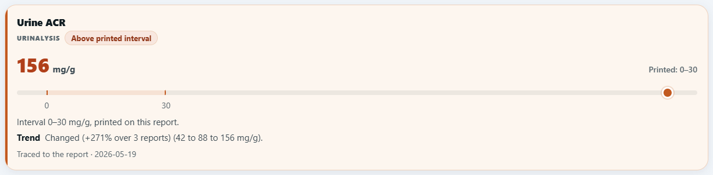
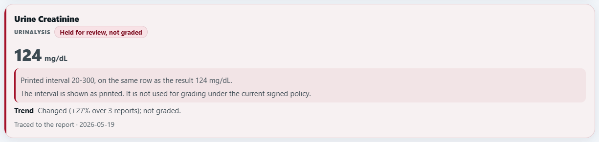

Clinical investigation across reports and time
From fragmented lab reports to a clearer clinical picture.
LabSense AI connects laboratory history, surfaces findings that need attention and asks targeted follow-up questions, helping clinicians investigate complex cases with traceable evidence.
1Dated reports
- 22 Apr 2025Urine albumin/creatinine ratio42 mg/g0-30
- 5 Nov 2025Urine albumin/creatinine ratio88 mg/g0-30
- 19 May 2026Urine albumin/creatinine ratio156 mg/g0-30source row
Three printed reports, one row each, values and intervals as printed.
2Longitudinal finding
Above the printed interval on all three reports
42, then 88, then 156 mg/g; the lab printed 0 to 30.
3Targeted question
The patient’s Urine Albumin/Creatinine Ratio is above the printed interval (156). Any leg/facial swelling, or frothy urine?
YesNoNot sure
One question about swelling or frothy urine; the answer does not say which.
4Recorded answer effect
Kidney disease severity
Beforealbuminuria without a clinical correlate
After “Yes”albuminuria with oedema / frothy urine
Used. Overall confidence and urgency stayed as they were.
Working prototype. Every case shown is synthetic. Not independently clinically validated. Status and evidence
What LabSense adds
Built for the case a clinician wants to look at twice.
- 01
It connects evidence across reports and time.
Reports from different dates, laboratories and panels become one dated history per test, each value with its unit, the lab’s printed interval and the report it came from.
- 02
It keeps uncertainty visible instead of guessing.
A result it cannot grade is kept as printed and says why. Two readings that disagree are both shown. A report printed for another patient is refused before anything is stored.
- 03
It records what each answer changed.
Every question names the value it is about. After an answer, a receipt says what it changed, or that it changed nothing; an uncertain answer concludes nothing.
Planned Its intended role is complex-case investigation and a second read alongside clinicians. What is shown on this page was demonstrated on synthetic cases in a local prototype; clinical use has not started.
Reports to history
The printed page on one side, the dated history on the other.
LabSense first confirms whose reports these are, then reads each row as printed: the test, the value, the unit, the lab’s own interval and the collection date. Like is compared with like: the same test, the same unit, the same patient.

- Urine ACR42, 88, 156 mg/gAbove the printed interval 0-30 on all three reports; 114 mg/g higher than on 22 Apr 2025.
- Urine protein (dipstick)1+, 2+, 2+Listed as printed on each report, never turned into a number.
Recorded values from synthetic case L07U, three reports from a fictional laboratory. Run record
Answer effects
One answer, and exactly what it changed.
Questions are optional and offer Yes, No and Not sure. The receipt below is the product’s own record of what one answer changed in the assessment, and of what it did not.
Question issued
The patient’s Urine Albumin/Creatinine Ratio is above the printed interval (156). Any leg/facial swelling, or frothy urine?
Recorded answer Yes
Kidney disease severity
Recorded reason: “Reported swelling/frothy urine with a raised ACR strengthened the kidney concern.”
What did not change
The main finding stayed “urinary abnormality, further review”, and overall confidence and urgency are unchanged. No change in ranking is claimed.
What is still missing
Symptom history beyond this answer, and a urine routine examination, listed as the most useful next input.
Recorded receipt from test runs of synthetic case L07U, redrawn for legibility. The answer covers swelling or frothy urine together; it is not read as confirming both. LabSense supports the clinician’s assessment; the clinician keeps the decision. Run record
Results cards
Every result keeps its state on screen.
Results cards from the local prototype, in the restored card design: the value, the lab’s printed interval as a band with the value marked, a status word, the change over time and the report it came from.

![LDL card from the local prototype. Lipid panel. Two readings, not resolved. Both readings above printed interval. 3.4 and 4.6 mmol/L, printed 0-3. Reports from 2026-02-03 give different values: 3.4 and 4.6 mmol/L. Which is right is not resolved. The record keeps 4.6 as its row value. Both readings are above the interval, so the grade is the same whichever is right. The record keeps this test in the current assessment. Whether an unresolved reading may drive a finding has not been decided clinically.](assets/cards/analyte-card-ldl_phone_v8.png)



Screen capture synthetic cases L07U and L02, local prototype, 2 November 2026. On a small screen the held and dipstick cards are redrawn from their recorded text, so nothing needs sideways scrolling.
Product demo
One synthetic case, from reports to assessment.
The film follows synthetic case C13 through identity checks, reading, the leading assessment, one question and what the answer did and did not change: the answer was used and the leading assessment stayed the same. Screens are recorded test output redrawn for legibility; two scenes are labelled as illustrations. It is a recording, not a live demonstration.
Differentiation
Reading a report is common. Connecting and checking a whole history is the work.
The left column was shown on synthetic cases. The right column is not built; it would become defensible only with use, data and clinical review LabSense does not have yet.
Shown today, on synthetic cases
- One dated history across reports, laboratories and panels, each value linked to its report Recorded
- Targeted questions, each with a receipt of what the answer changed Recorded
- Uncertainty kept visible: held results, conflicting readings, units kept apart Recorded
- A report printed for another patient refused before storage Recorded
- One record carried from the report to history, questions, reassessment and export Recorded
Future defensibility, not built yet
- A library of laboratory report formats, each checked row by row against its printed values Planned
- A disagreement dataset: cases where two readers, or a reader and a clinician, disagreed, with the resolution Planned
- A quality report for a partner laboratory: refusals, unit conflicts, missing intervals, duplicates Planned
- Clinician-signed rules beyond the limited set signed so far Planned
Compared with the public pages of seven products reviewed on 29 October 2026: a reading of their material, not a tested comparison; others are ahead on laboratory networks, distribution, clinicians in the loop and integrations. Comparison
Evidence and current stage
A working prototype, tested on synthetic cases.
LabSense supports clinicians’ assessment and does not provide an autonomous clinical diagnosis. It has no users or customers yet and no regulatory clearance. Software testing on synthetic cases is not clinical validation.
Clinical rules. A licensed clinician co-signed a limited set of specific rules on 29 September 2026, for example how unreadable reports and unverified results must be shown. Recorded
Independent review of outputs. Not done yet. Not yet
Now
A working prototype on our own machine, behind a sign-in; not online. Supervised sessions on synthetic cases. Live in the local prototype
Next
Independent clinical review of outputs, then clinician-supervised evaluation: our target is December 2026; no site, partner or trial has been agreed. Planned
Later
More sources of evidence, such as hospital records (FHIR), ECG and wearable data. No integration exists today. Planned
Evaluation access
Request a supervised evaluation.
This website is a static page and is not connected to the prototype. There is no public sandbox and no online upload. An evaluation is a supervised session on synthetic cases, or you can watch the product demo above.
Include your name, organisation and a suggested time. Sessions use synthetic reports only; please do not send real patient documents.
A session shows
- Reports being read, row by row, into one history
- Findings across reports and time
- The questions, and what an answer changed or did not
- Each value traced to its report
- The review snapshot export